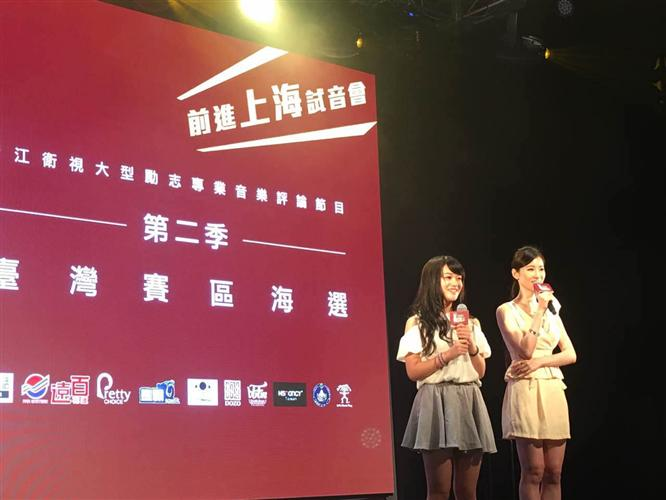
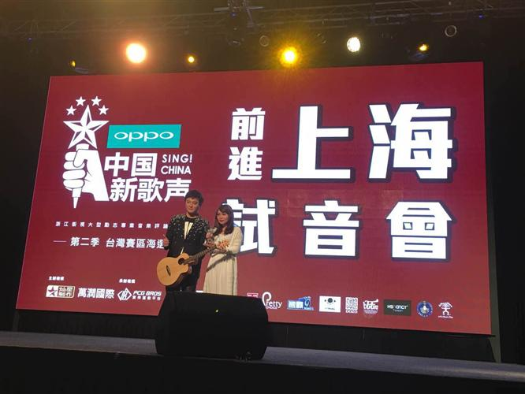
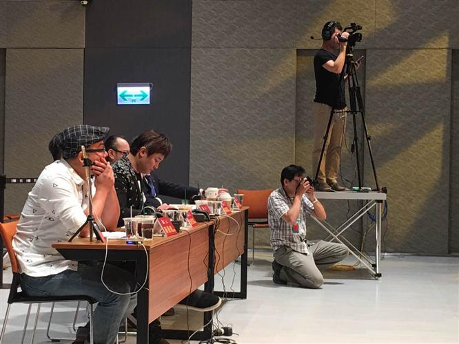
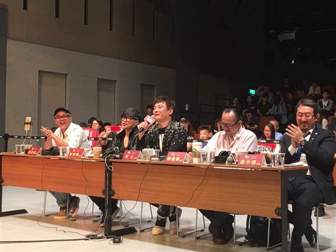
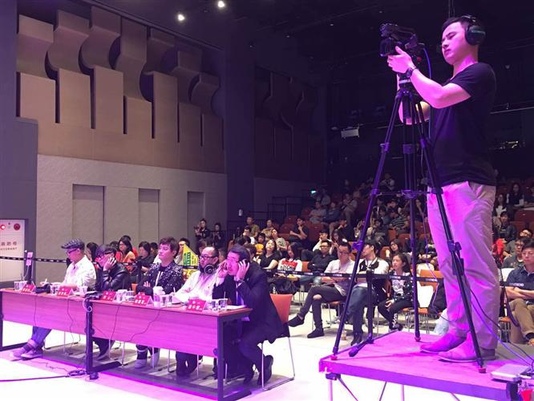
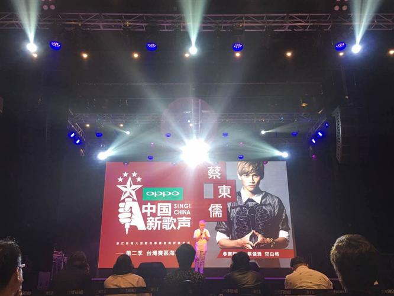
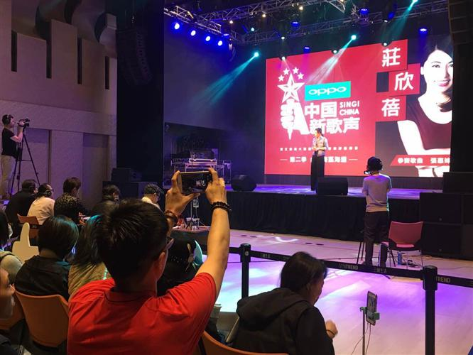
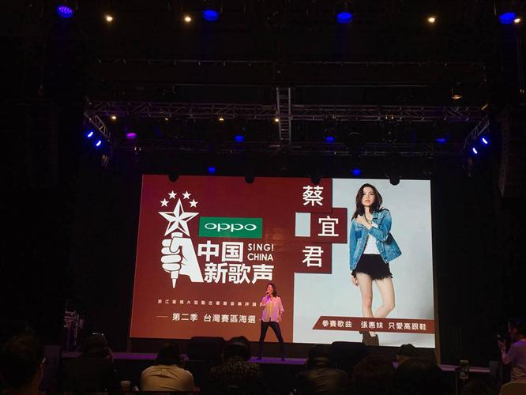
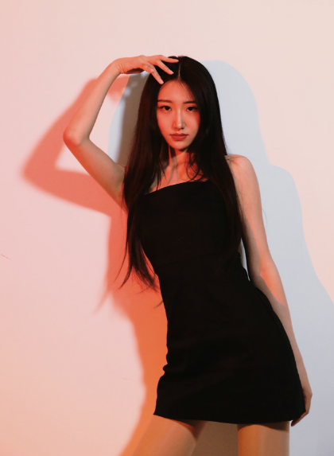

《中国新歌声》第二季台湾赛区三强晋级挺进上海！
《中国新歌声》第二季台湾地区海选决赛，
评审与参赛选手合影。
《中国新歌声》第二季台湾区海选决赛，27日在台北市三创生活园区展开。13位选手站在大舞台热力飙唱，有抒情乐曲，也有高亢劲歌，扣人心弦的天籁美声，感动每位评审。
最终，林筱庭、王萱苹、蔡宜君三位脱颖而出，将代表台湾前往上海参加“终极试音会”接受歌唱考验，一圆歌手梦。


《中国新歌声》第二季台湾地区海选现场


《中国新歌声》第二季台湾地区海选决赛评审
小编了解到，为配合高水平决赛，评审团阵容坚强“灰常”强大，特别邀请：苏通达老师（台湾新生代知名制作人、编曲人）、阿沁老师（歌手、F.I.R飞儿乐团吉他手、作曲填词人、阿尔发唱片总经理、流行艺术学校校长）、韩罗贤老师（音乐制作人、词曲家、艺能训练学校校长）、崔惟楷老师（知名词曲创作人）、边中健老师（美声主厨）、陈世光老师（亚洲天王周杰伦中学时期音乐导师）等人严选把关。

《中国新歌声》台湾地区海选决赛，
台下观众座无虚席。



《中国新歌声》台湾地区海选决赛参赛选手
最高分的林筱庭以一曲「灯塔」高分拿下第一名，以冠军之姿取得前进上海门票；林筱庭来自高雄，是位热爱歌唱与书法的女孩，歌唱对她来说就像呼吸，也像说话一般。林筱庭表示，希望能用最擅长的方式与大家一同分享他的生活与感受，也希望大家能感受到她对歌唱的狂热。
《中国新歌声》台湾地区海选决赛冠军林筱庭
演唱「只爱高跟鞋」的蔡宜君以及「你为什么说谎」的王萱苹则是紧追在后，分别获得二、三名。
蔡宜君外型亮眼，有「小邓紫琪」称号，目前担任有氧舞蹈老师，在各大健身房及运动中心授课；追寻音乐梦想，也热爱舞台，像是一颗璞玉，慢慢雕琢成翠玉白菜，目标是成为实力派唱跳歌手，希望能站上大舞台让更多人看见。
王萱苹则是将唱歌视为专长的高雄女孩，希望藉由每一次的经验，让自己更加进步、更能挑战自己，也希望藉由每一次的上台，能让家人和喜欢自己的亲朋好友们，听到自己的歌声。

《中国新歌声》台湾地区海选决赛
亚军蔡宜君、季军王萱苹
接下来，三强将获得前进上海的机会，在更大的舞台上与其余好手较劲角逐，为中国新歌声第二季台湾赛区海选活动画上圆满句点。
2017年上海赛区第二季中国新歌声上海赛区十强诞生其中有林璇等人。 林璇资料 女，汉族，中共党员，1993年11月16日出生于山东省潍坊市，天蝎座，O型血，身高：170cm，华语乐坛女歌手、腾讯音乐人，流行声乐演唱专业研究生，毕业于沈阳音乐学院，现艺术学（音乐）博士在读。
